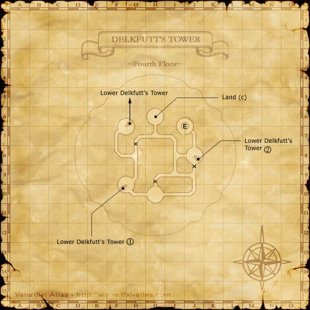
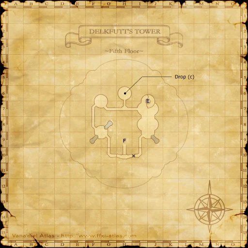
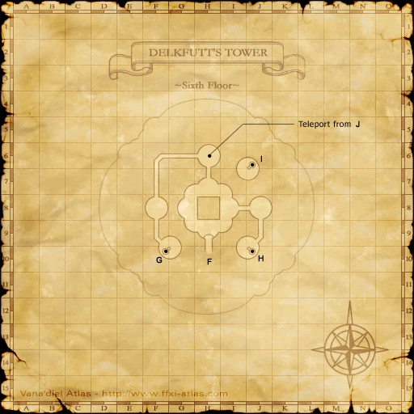
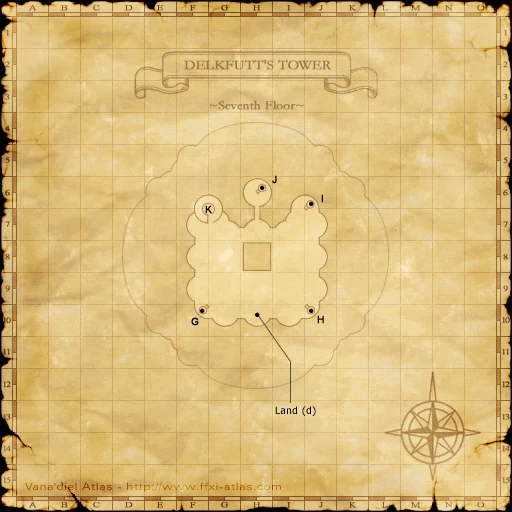
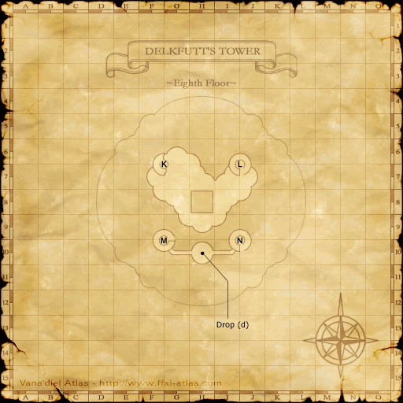
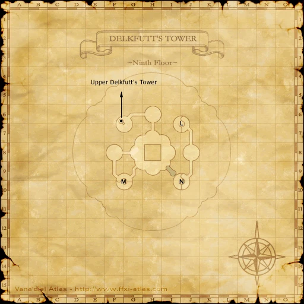
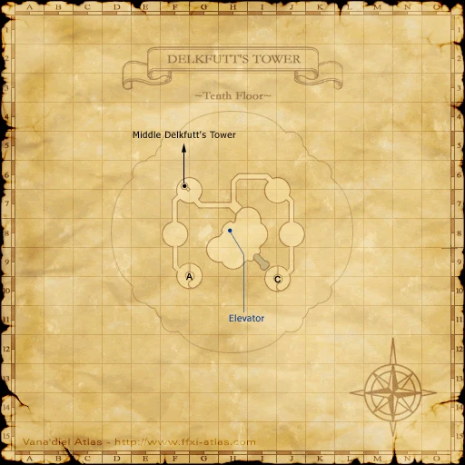
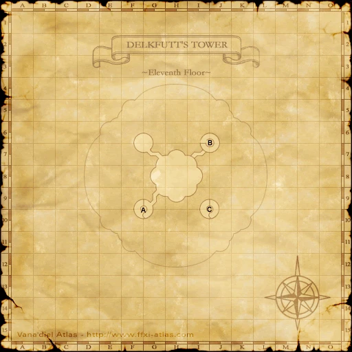
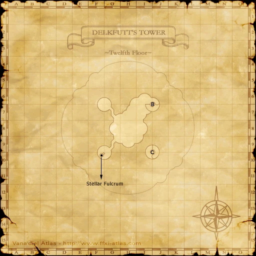

Before you begin
- Complete ACP 9.
- Travel supplies usable under a level-30 restriction.
Starting point
Seed Fragment · Lower Delkfutt's Tower
Era note: 2009 level-75-era add-on. Modern retail shortcuts and item-level solo claims are not assumed on Zenith.
Walkthrough
- Examine the Seed Fragment near the entrance to accept the level-30 restriction and start the ascent. Prepare Sneak/Invisibility consumables before accepting it.
- Collect the Seed Afterglow on every floor. Lower tower: floor 1 J-11 Amicitia; floor 2 H-7 Veritas; floor 3 I-9 Sapientia.
- Middle tower: floor 4 H-10 Sanctitas; floor 5 G-7 Felicitas; floor 6 F-8 Divitia; floor 7 H-9 Studium; floor 8 I-8 Amoris; floor 9 G-8 Caritas.
- Upper tower: floor 10 G-9 Constantia; floor 11 H-7 Spei; floor 12 H-7 Salus. Follow the stairs through every floor rather than skipping the required afterglows.
- At the Stellar Fulcrum, examine the Seed Fragment with all twelve key items to receive the Omnis Stone. Examine the Qe'Iov Gate for the scene leading to the final battle.
Completion and reward
Omnis Stone.
What this opens
- ACP 11
Area maps
Open a zone below, then select a map to enlarge it. Match the named floors and grid coordinates in the steps; these are reference area maps, not a live position tracker.
Lower Delkfutt's Tower


Middle Delkfutt's Tower


















Upper Delkfutt's Tower









Zone guides
References
Steps are an original summary of the linked walkthrough and reviewed source. Other servers’ bonus rewards are not included. How to read requirements, waits and battlefield notes.